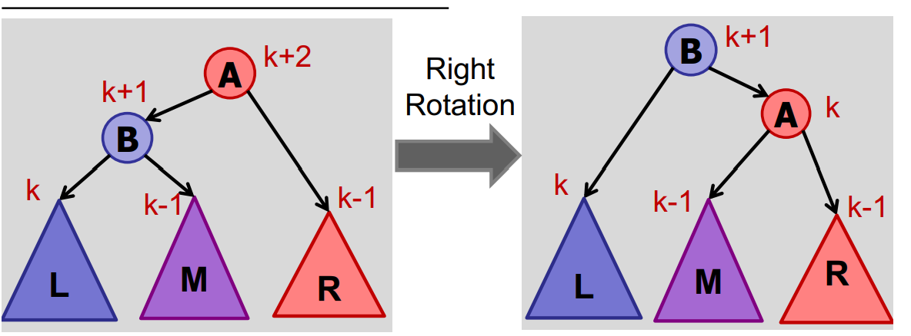
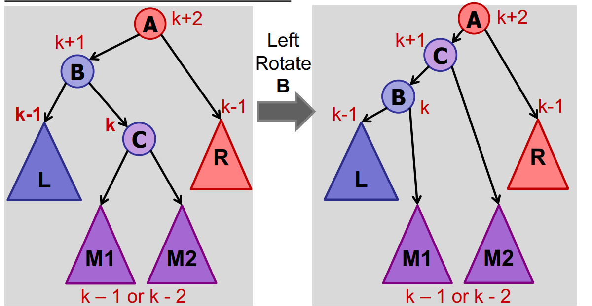
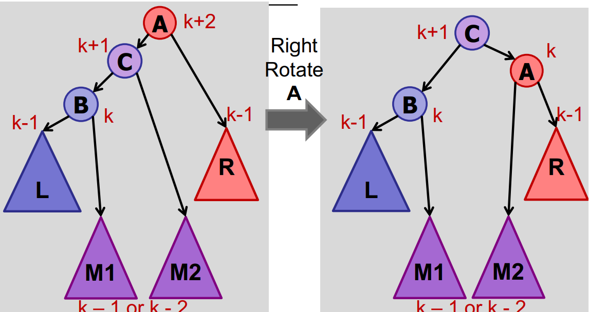
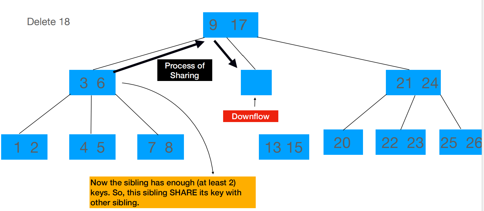

CS2040S Midterm CheatSheet
CheatSheet
- ADTs are specifications for behaviors without any implementation. E.g. Stack, Queue, Dictionary, Set, Map. Data Structures are concrete implementations of ADTs. E.g. Array, Linked List, Binary Tree, Hash Table, Heap
Lecture 3 & 4 : Peak Finding & Searching
- Applications of binary search: Think of binary search whenever:
- There is a sequence of "monotonic function" in blackbox. That is , for each v[i], for i <= k, it returns false, for i >= k, it returns true.
Sort
Stirling approximation: O(log(n!)) == O(nlog(n))
Classic Sorting Algorithms
BubbleSort
1 | repeat n times: |
Selection Sort
1 | for j ¬ 1 to n-1: |
Insertion Sort
1 | InsertionSort(A, n) |
Average Case Analysis: On average, a key in position j needs to move j/2 slots backward (in expectation).
MergeSort
1 | MergeSort(A, n) |
For the iterative MergeSort, we will sort the array in groups of power of 2. In other words, we will first sort the arrays in pairs, then merge into 4’s, 8’s and so on, until we have merged the entire array
Summary
| Features | Bubble Sort | Selection Sort | Inerstion Sort | Merge Sort |
|---|---|---|---|---|
| Time Complexity | O(n^2) | O(n^2) | O(n^2) | O(n * log(n)) |
| NearlySorted ? Random | O(n) < | = | O(n) < | = |
| Space Complexity | O(n) | O(n) | O(n) | O(n) (No need to allocate new arrays, can you previous ones instead) / O(n * log(n)) when it's MergeSort iteration |
| Stability | 1(swap only when elements are different) | 0(e.g. [2, 2, 1]) | 1(A[i] > key not >=) | 1(if implementation is designed carefully) |
| Behaviour | Largest 𝑘 elements are at the end of the array(after 𝑘 iterations) | Smallest 𝑘 elements are at the start of the array(after 𝑘 iterations) | First 𝑘 elements are sorted (after 𝑘 iterations),last 𝑛 − 𝑘 elements are untouched | Each subarray is already sorted when merging |
Quicksort
Introduction
1 | QuickSort(A[1..n], n) |
1 | partition(A[1..n], n, pIndex) // Assume no duplicates, n>1 |
1 | ParanoidQuickSort(A[1..n], n) |
Quicksort Optimization
Switch to InsertionSort for small arrays.
Halt recursion early, leaving small arrays unsorted. Then perform InsertionSort on entire array. (InsertionSort is fast on almost sorted arrays, about O(n))
Order Statistics
Find \(k^{th}\) smallest element in an unsorted array
1 | Select(A[1..n], n, k) |
Time Complexity: O(n)
Lecture 08 Trees
Dynamic Data Structures
Tree Basic Concepts
What determines shape? • Order of insertion • Does each order yield a unique shape? NO – # ways to order insertions: n! – # shapes of a binary tree? ~4n (Catalan numbers: Catalan Numbers Cn = # of trees with (n+1) nodes Cn = # expressions with n pairs of matched parentheses)
Successor:
If you search for a key not in a tree, you would either find its successor or its predecessor
1
2
3
4
5
6
7
8
9
10
11
12
13
14
15Successor(int key) { // successor function for key (in / not in tree)
int result = search(key); //either return successor or predecessor
if(result > key) return result;
else return SuccessorKeyInTree(result);
}
SuccessorKeyInTree(int key) {// search for successor when key is in tree
if (key has right child ) {
return rightChild;
}
while ((parent != null) && (child == parent.rightTree)) {
child = parent;
parent = child.parentTree; // note that here child has become parent
}
return parent;
}Deleting
1
2
3
4
5
6
7
8
9
10if (key.childNumber == 0) {
//simply delete.
}
else if (key.childNumber == 1) {
//make the child of key substitude child
}
else {
//key has two child -> key has right child -> the successor is the min in the right child -> sucessor has no left child.
substitude successor with its child and substitude key with successor.
}
Keeping Trees Balanced
Concept
Key definition: A tree is balanced if h = O(logN) (By default: log(n) –1 ≤ h ≤ n)
AVL Trees
Proof of Balance
node v is height-balanced if |v.left.height – v.right.height| <= 1
A height-balanced tree with n nodes has at most height h < 2log(n)
Interesting Property: a maximal imbalanced AVL tree(AVL treewith the minimum possible number of nodes given its height h.)has all its subtrees to be maximally imbalanced.
Maintaining Height-Balance

After insertion, start at bottom, work your way up.
Assume A is the lowest node violating valance property. Assuming that A is left heavy:
- B is balanced

- B is left-heavy

- B is right heavy


[S] what about nodes higher than that?
- In Case 2 & 3, we reduce the height by 1, thus the upper must be balanced.
- In Case 1, Case 1 would never appear when doing an insertion.[S] What about deletion!
For deletion, we walk up tree, check for balance and rotate every node if needed. It is NOT sufficient to only fix lowest out-of-balance node.
![[U] Why?](BalanceButNotHeightBalance.png)
Augmenting Trees
Dynamic Order Statistics
Find the rank of a node
1
2
3
4
5
6
7
8
9rank(node)
rank = node.left.weight + 1;
while (node != null) do
if node is left child then
do nothing
else if node is right child then
rank += node.parent.left.weight + 1;
node = node.parent;
return rank;Maintaining weight during insertion and rotation.

Trie
- Costs(h for the height of trie, L for the length of word)
- search: time - O(L)
- store: space - O(L)
Interval Queries
Goal:
- Solutions where space is linear (or near linear) in the number of things stored (i.e., intervals).
- Operations are logarithmic in number of things stored.
Augment
store the maximum of right end point!
Implement
search:

when we walk down the nodes to(17,19), the information that we need are: 17(left interval), 25(max = left subtree)
Case 1: x > 25 (max of left subtree):
Go right. (the node is either in right tree or not in tree!)
Case2: 17 < x <= 25
Go left. (there must be atleast one node that contains x!)
Case3: x < 17
Go left. (there is 0 possibility that the right subtree contains x!)
In three cases we are safe to go (the direction we go contains the key / the direction we don't go does not contain key)
Orthogonal Range Searching
Introduction
Are there any good restaurants within one block of me - search for the points in a given box
Sample: One-Dimension
Strategy
- Use a binary search tree and store all the points in the leaves of a tree. Each internal node stores the MAX of any leaf in the left sub-tree.

Do Search(10, 50): (Time complexity: O(log(n) + k), where k is the number of items)
- Find Split Node: the highest node that search includes both left and right subtrees(in this case, 25) O(logn)
- Do left and right traversal on the left and right tree. O(k)
- Left Traversal: The search interval for a left-traversal at node v
includes the maximum item in the left subtree of v.
1
2
3
4
5
6
7
8
9
10
11
12
13
14
15
16
17
18LeftTraversal(v, low, high) {
if (low <= v.key) {
all-leaf-traversal(v.right);
//change all-tree-traversals to total += v.right.ount
//if just need to know how many nodes are with the range
LeftTraversal(v.left, low, high);
} else { // left traversal on the right subtree
LeftTraversal(v.right, low, high);
}
}
RightTraversal(v, low, high) {
if (v.key <= high) {
all-leaf-traverasal(v.left);
RightTraversal(v.right, low, high);
} else {
RightTraversal(v.left, low, high);
}
}
BuildTree time complexity : O(n log n)
Dynamic updates: Rotation
Two-Dimension
- Idea:
- 1: Create a 1d-range-tree on the x-coords.
- 2: Store a y-tree at each x-node containing all the points in the sub-tree.

k-d Tree
space partitioning data structure for organising points into a 𝑘-dimensional space.
The even stores horizontal splits and odd stores vertical split(vice versa)
(a, b) trees
Rules
- 2 ≤ a ≤ (b + 1)/2, where a and b refers to the minimum and maximum number of children in a internal node(not root / leaf).

- every node should follow that: range theory
- All leaves should have the same depth.
Manipulation
Is ab tree balanced?

Insertion:
Solution 1: (1) At first put the element in its correct place in the node (which is in sorted order)
If the node overflows, then find the median ( = if is even and if is odd ) key in that node.
Put the median key in the parent and split the current node
Solution 2: Proactive Approach
Preemptively split a node whe it is full so that it does not overflow in the future.
- Deletion:
- Case 1: Problem with Orphan Children.

In this case, we replace the deleted node either with the predecessor or successor key- Case 2: Problem with downflow

If at least one sibling has at least a keys, then donate the key to the other sibling
If none have enough keys, then merge the two siblings and the parent together.



B-trees
B-trees are simply (B, 2B)-trees. That is to say, they are a subcategory of (a, b)-trees such that a = B and b = 2B.
- Cost
All the costs of searching a key list / splitting a node / merging / sharing B-tree nodes are O(1)!
The cost of searching a B-tree / inserting / deleting in a B tree is O(loga n)!
Tree Operation conclusion
- modifying:
- insert: O(h)
- delete: O(h)
- Query Operations:
- search: O(h)
- predecessor / successor: O(h)
- findMax / findMin: O(h)
- Traversal: O(n)
Height of Binary Tree After Subtree Removal
- Solution 2: Depth of a node refers to the number of edges in the
simple path from root to the node
- preprocess the tree to get its depth using DFS and height using in-order-traversal.
- For ith query, we look at all the nodes with the same depth of ith
node and find the maximum height among them. The answer to the query
would be
node[i].depth + max_height. - SO how do we group the nodes of the same depth? We do this by iterating the nodes in in-order-traversal([U] wut?). For each group of nodes in the same depth, we only require the maximum height and second maximum height. To do this we need O(n) time([U] wut?).
- In this algorithm, we only need O(1) for each query. The overal time complexity would be O(n + m)